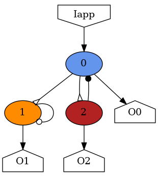

Rendering Networks
When designing networks, it can be useful to have a visual representation of network structure. SNS-Toolbox provides an
interface for rendering images of SNS network structures, which is built using graphviz. Installing
graphviz is not necessary for designing and simulating networks with SNS-Toolbox, but is required for rendering
their structure. For installing graphviz in your development environment, please consult their
documentation.
Basic Usage
For a basic overview of how to use the rendering engine, let’s build a simple network.
neuron_type = NonSpikingNeuron()
synapse_excitatory = NonSpikingSynapse(reversal_potential=40.0)
synapse_inhibitory = NonSpikingSynapse(max_conductance=1.0, reversal_potential=-40.0)
synapse_modulatory = NonSpikingSynapse(reversal_potential=0.0)
net = Network(name='Network')
net.add_neuron(neuron_type,name='0',color='cornflowerblue')
net.add_neuron(neuron_type,name='1',color='darkorange')
net.add_neuron(neuron_type,name='2',color='firebrick')
net.add_connection(synapse_excitatory,'0','1')
net.add_connection(synapse_excitatory,'0','2')
net.add_connection(synapse_modulatory,'1','1')
net.add_connection(synapse_inhibitory,'2','0')
net.add_input('0',name='Iapp')
net.add_output('0',name='O0')
net.add_output('1',name='O1')
net.add_output('2',name='O2')
Once a network is built, we can pass it into the SNS-Toolbox renderer:
from sns_toolbox.renderer import render
render(net, view=True, save=True, filename='Example Network', img_format='png')
and the above network is rendered into a connectivity graph.
{kind=link}
Supported Formats
graphviz supports a wide variety of image formats, please see their
documentation.
Symbol Glossary

{kind=link}